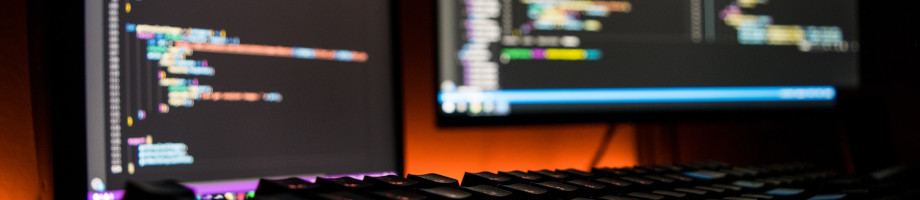

How to switch between monitors from the terminal

...using xrandr and shell hacks?
I was wondering this recently, as I was struggling every, darn time I wanted to plug in an external monitor into my laptop. I already had some dirty hack that would run xrandr while logging in and have it automatically set any connected monitor as the primary. The big issue with this was that I had to log out and then back in all the time, having to reopen all the windows and tabs that were already open. Annoying. Why not have a separate script that I could run in the terminal instead? Well, my window manager (bspwm) would mess up the screen dimension if you were already logged in and running the X server, and I was too lazy to fix that. It was so much quicker to just run xrandr during login.
Shell scripting ahoy
I finally sat down and made a proper script, first I had to check if the external monitor was connected using
xrandr -q | grep -q "HDMI-2 connected"and, depending on the exit state from grep, set the primary monitor with
xrandr --output eDP-1 --off --output HDMI-2 --primary --autoas an example. Having a separate script and removing the login hack fixed the first issue.
Issue two
Next, I had to fix the annoying problem with the messed up screen dimensions.
I found one partial solution in the closed bspwm issue #893
that finally worked for me. I had to grep for the correct monitor rectangle
(that was automatically set by xrandr) and then instruct bspwm to use that
instead (using the monitor -g command on the second line):
rect=$(xrandr -q | grep -oe "[0-9][0-9][0-9][0-9]*x[0-9][0-9][0-9][0-9]*+0+0")
bspc monitor -g "$rect"My shell didn't like having \d in the grep pattern, so for now
it's a long pattern with [0-9] and I'll leave it as a clean up task
for the future instead.
And a third issue
While doing the research I also noticed some extra settings for bspwm that seemed like a good idea to enable:
bspc config remove_disabled_monitors true
bspc config remove_unplugged_monitors true
bspc config merge_overlapping_monitors trueThese should help with keeping a clean state while being logged in for months, but they didn't come for free and introduced yet another problem. Every time I ran the script and switched monitor I would land on an empty desktop that I wasn't using and I was forced to manually jump back into the desktop that was used before. I assume this was caused by cleaning up the monitor states and the desktop usage history by using the above settings.
Another quick hack was finding the current desktop before switching monitors (inspired by #893 again):
desk=$(bspc wm -d | jq ".monitors[].focusedDesktopId")Then jump back to this desktop ID after the switch, using:
bspc desktop -f "$desk"It's a ugly hack but it works for now I guess?
The final script
All said and done, let's clean up everything and call this script refreshmonitor (it felt nicer to start typing the first couple of letters of "refresh" using one hand and then hit tab & enter... instead of typing the beginning of "switch", since that requires both hands). Here's the initial version for brevity:
desk=$(bspc wm -d | jq ".monitors[].focusedDesktopId")
if xrandr -q | grep -q "HDMI-2 connected"; then
xrandr --output eDP-1 --off --output HDMI-2 --primary --auto
else
xrandr --output eDP-1 --primary --auto --output HDMI-2 --off
fi
bspc desktop -f "$desk"
rect=$(xrandr -q | grep -oe "[0-9][0-9][0-9][0-9]*x[0-9][0-9][0-9][0-9]*+0+0")
bspc monitor -g "$rect"